Blockly tips and tricks
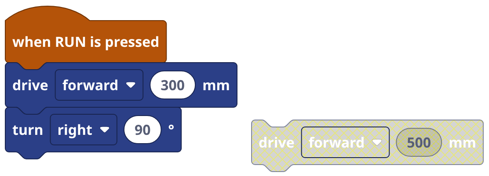
Only blocks under when RUN is pressed (or in a subroutine) run. A loose block turns gray and is skipped.
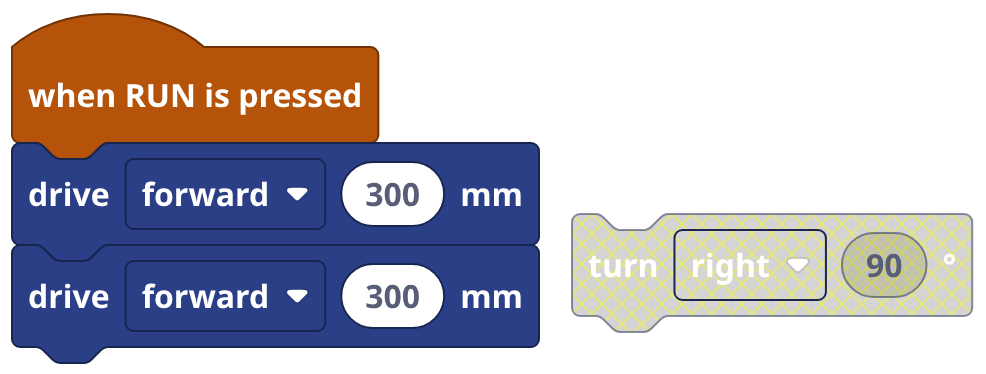
A drag takes every block under it too. Hold Ctrl while you drag to take just that one. Or click it, press X.
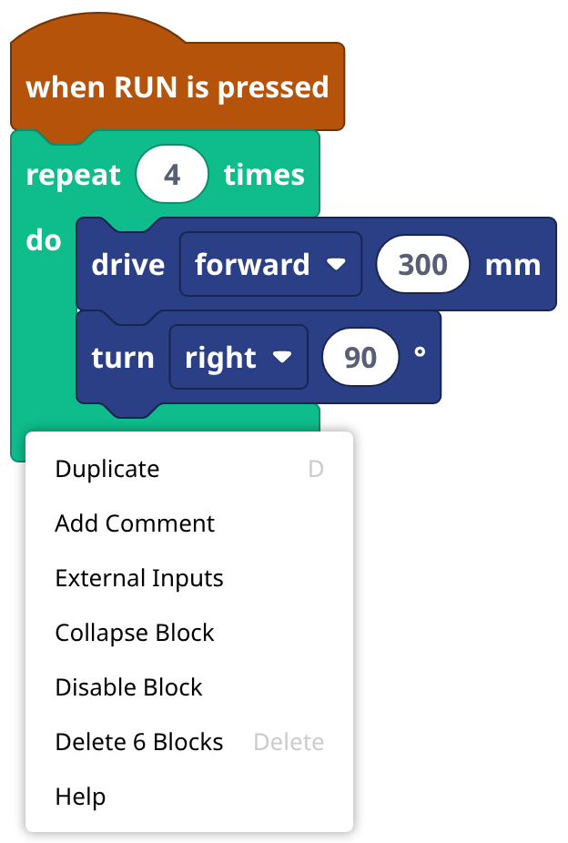
Right-click, Duplicate: a copy of the block and all inside it. Faster: click it, press D.
| Ctrl+C Ctrl+V | copy, paste (other tabs too) |
| Ctrl+X | cut |
| Ctrl+Z Ctrl+Y | undo, redo |
| Delete | delete it |
| D | duplicate it |
| X | pull it out of its stack |
| C | clean up: line blocks up |
Click a block first. Mac: Cmd for Ctrl.
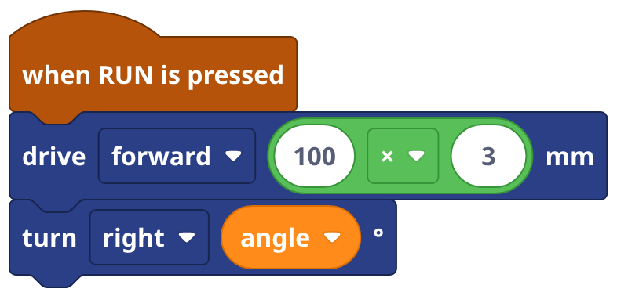
Click a number to type. Drop a variable or a math block on it. Drag that out: the number comes back.
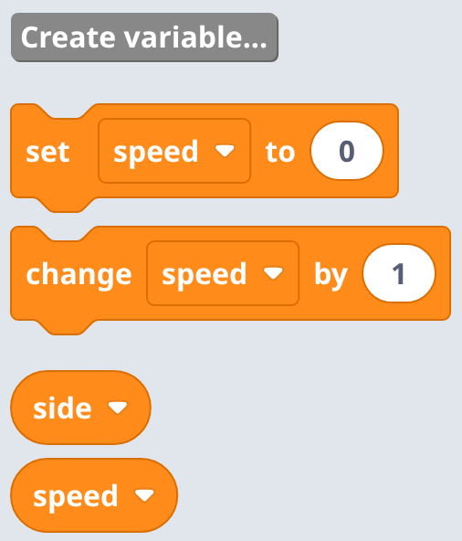
A box with a name, for a number or some text. Variables, Create variable..., type a name like side.
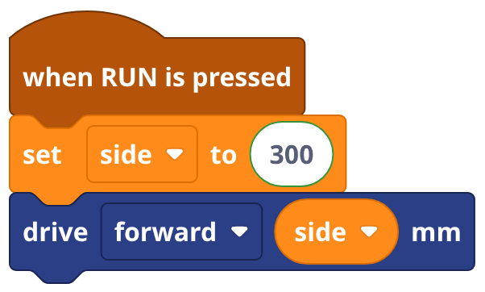
set side to 300, then put the round side where a number goes. Change 300 once: every move follows.
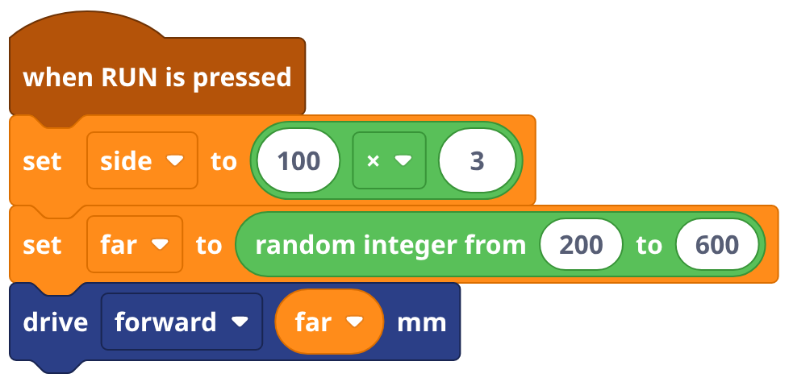
Drop a Math block in: 100 × 3, or random integer 200 to 600 for a new number every run.
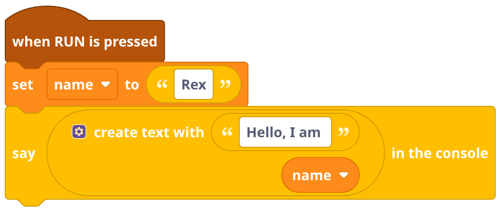
The " " block (Text) holds words. create text with glues words and numbers together for say.
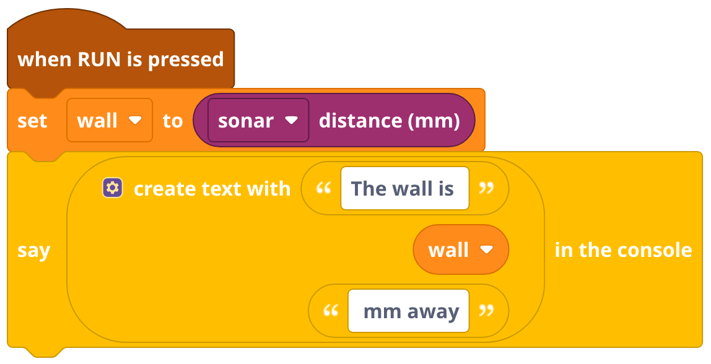
set wall to sonar distance keeps what the sonar saw right then. Read it again later: did it change?
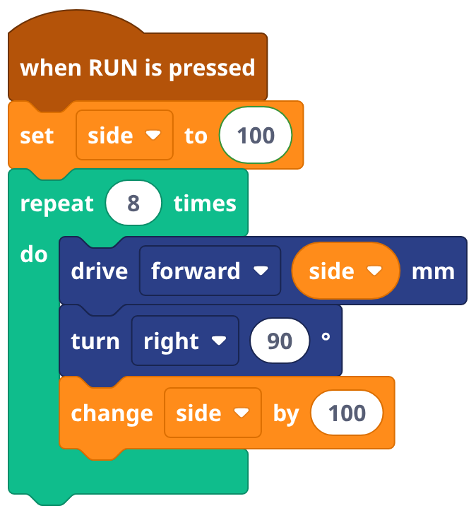
change side by 100 adds 100 each time round: a spiral. -100 makes it smaller.
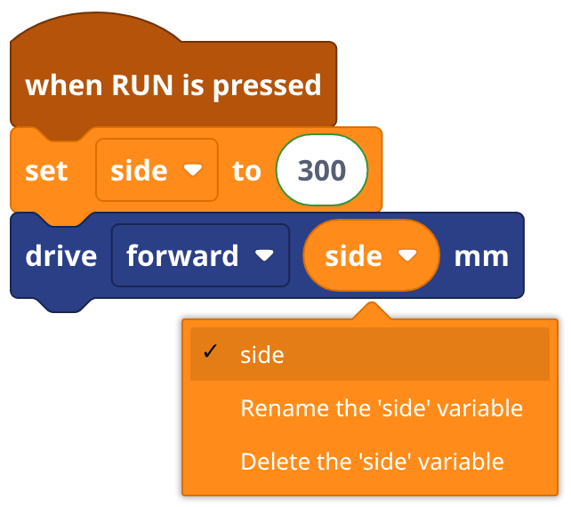
Click the triangle on a variable: pick another one, Rename it everywhere, or Delete it.